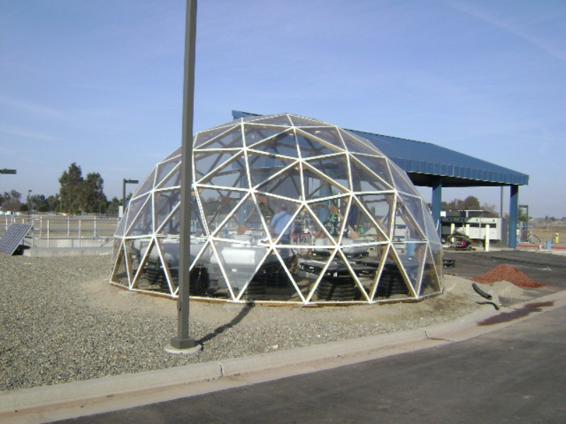
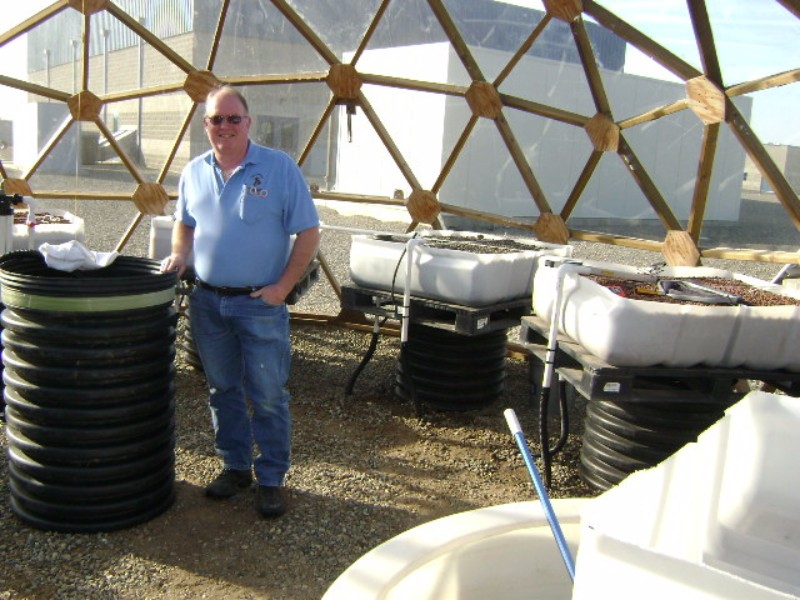
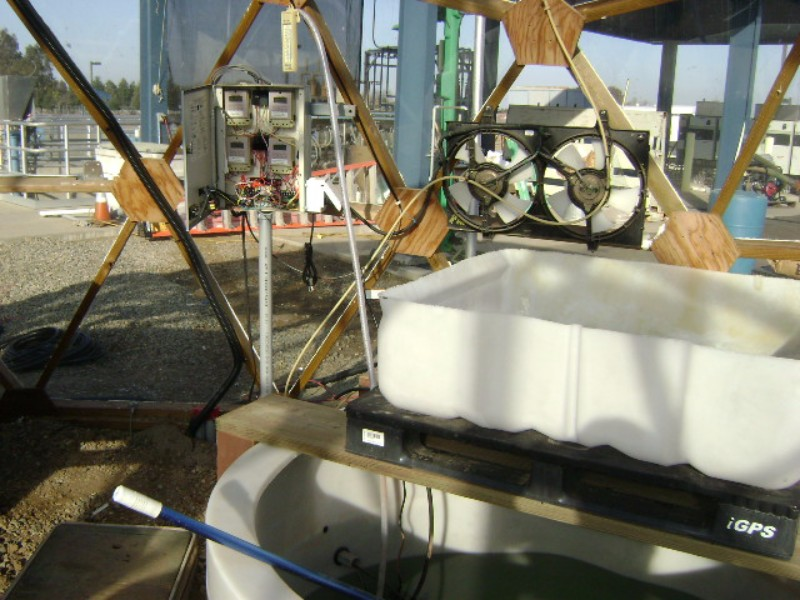
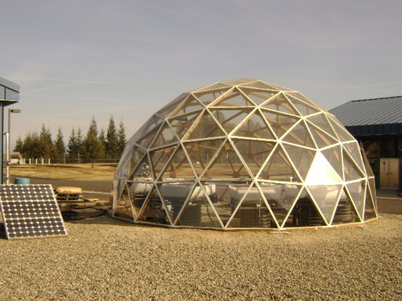

J & J Aquafarms
Consultant and Supplier for Aquaculture and Aquaponic systems
Home
About
Order
Plants
Fish
Fish Food
Technical Bulletins (Free)
Aquaponics
Build your own
CART
Sanger HS
Caruthers HS
Clovis
Avenal
Blog
Stay
Clovis Water Department Demonstration Aquaponics
   